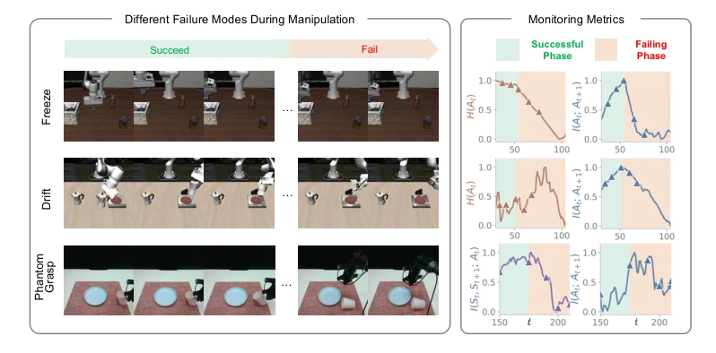
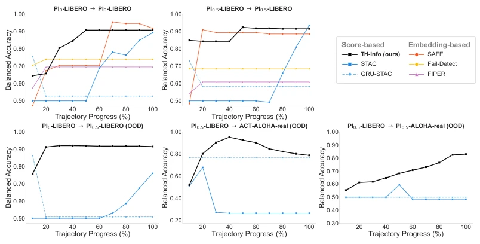
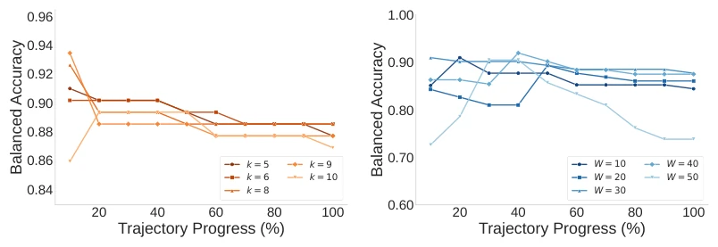
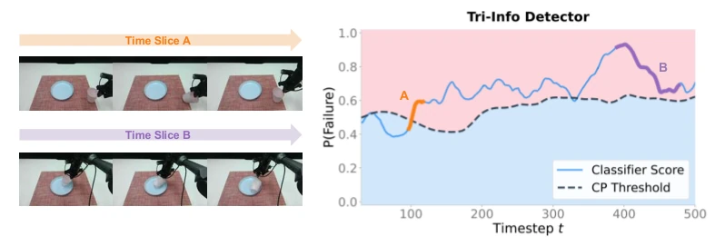
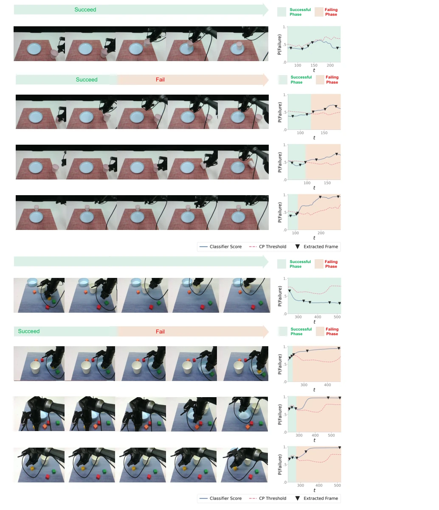
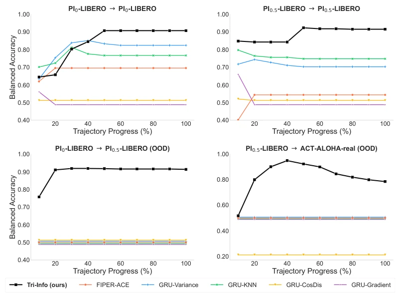

VLA 模型在分布外场景下会“静默失效”，而机器人操作不可逆，一旦出错可能伤人毁物 (Brunke et al. [2022])。现有检测器要么依赖特定架构的嵌入空间 (SAFE [Gu et al. [2025]], Fail-Detect [Xu et al. [2025]])，无法跨模型迁移；要么像 STAC [Agia et al. [2024]] 仅提供单一一致性分数，缺乏诊断能力。本文旨在解决通用性与可解释性的矛盾，寻找一种不依赖特定几何结构的信号，能提前预警并指出故障模式（如冻结、漂移、幻影抓取）。
—

Figure 1: Information-theoretic metrics shift at failure onset. Representative failure trajectories under three failure modes: freeze (H(At)↓, I(At; At+1)↓) and drift (H(At)↑, I(At; At+1)↓) on PI0-LIBERO, and phantom grasp (I(St, St+1; At)↓, I(At; At+1)↓) on ACT-ALOHA-real. Left: 5-frame visual strips; right: the corresponding metrics, each shifting sharply as the trajectory crosses from its successful into its failing phase. Different modes leave distinct signatures, motivating the three complementary Tri-Info signals.
Figure 4: Pearson correlation of the eight metrics, pooled over all model–environment combinations. The four state–action coupling metrics are highly redundant (r ≥0.95), so a single representative I(St, St+1; At) is kept; the action-centric H(At) and I(At; At+1) are retained as complementary signals, moti- vating the three-signal reduction.

Figure 5: Baseline comparison. Failure detection accuracy across different trajectory progress. Our Tri-Info detector consistently achieves higher accuracy at both early and final time points, and transfers well to OOD settings where all baselines collapse.
Figure 6: Tri-Info detector per-timestep P(Failure) on PI0.5-LIBERO. Failed trajecto- ries (red) cross the threshold θ(t); successful ones (blue) stay below it.

Figure 7: Balanced accuracy versus trajectory progress for the Tri-Info detector (PI0.5-LIBERO) under the two estimator hyperparameter sweeps. Left: neighborhood size k ∈{5, 6, 8, 9, 10} at fixed W = 30; the curves are tightly clustered, indicating that detection is insensitive to k. Right: window length W ∈{10, 20, 30, 40, 50} at fixed k = 5; the wider spread, with W = 30 highest, shows that W is the more consequential hyperparameter.
其他图片Other Figures

Figure 2: The Tri-Info detector raises P(Failure) ahead of each dangerous event on ACT- ALOHA-real. The fused score (blue) crosses the conformal-prediction (CP) threshold (dashed) just before two near-tipping events (t=97–117, 390–477, marked by image insets), demonstrating early warning under real-world sim-to-real transfer.

Figure 8: Tri-Info detector results for two real-world platforms (top: ACT-ALOHA-real; bottom: PI0.5-ALOHA-real). Each platform shows four rollouts – three failed and one successful – and each rollout pairs five trajectory frames with the corresponding classifier score and CP threshold (α = 0.05).

Figure 9: Comparison against action-based scores. Failure detection accuracy across different trajectory progress for Tri-Info versus FIPER-ACE and the four action-continuity scores, all sharing our GRU pipeline. Tri-Info consistently achieves higher accuracy at both early and final time points, and transfers well to OOD settings where these alternatives collapse.